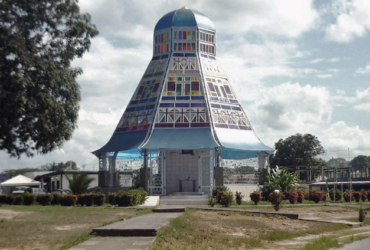

Mamporal está ubicado en el estado Miranda, Venezuela, dentro del municipio Buroz. Rodeado de naturaleza, es un punto de referencia en la región de Barlovento.
La historia de Mamporal está ligada al desarrollo agrícola de Barlovento. Desde tiempos coloniales, ha sido un centro de producción de cacao y otros cultivos, con una población marcada por el legado afrodescendiente.
La cultura mamporaleña se expresa en sus fiestas patronales, música tradicional, y manifestaciones religiosas. El tambor barloventeño es protagonista en sus celebraciones, reflejando la identidad afrovenezolana.